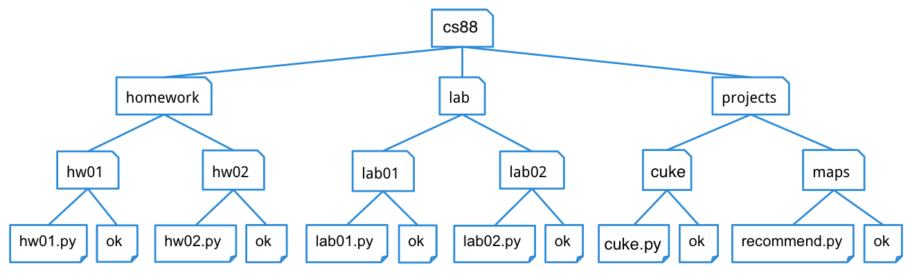

Lab 3: Data Abstraction and Trees
Due at 11:59pm on 10/16/2016.
Starter Files
Download lab03.zip. Inside the archive, you will find starter files for the questions in this lab, along with a copy of the OK autograder.
Submission
By the end of this lab, you should have submitted the lab using ok. You may submit more than once before the
deadline; only the final submission will be graded.
- All questions for this lab are required.
Data Abstraction
Data abstraction is a powerful concept in computer science that allows programmers to treat code as objects --- for example, car objects, chair objects, people objects, etc. That way, programmers don't have to worry about how code is implemented --- they just have to know what it does.
Data abstraction mimics how we think about the world. For example, when you want to drive a car, you don't need to know how the engine was built or what kind of material the tires are made of. You just have to know how to turn the wheel and press the gas pedal.
An abstract data type consists of two types of functions:
- Constructors: functions that build the abstract data type.
- Selectors: functions that retrieve information from the data type.
For example, say we have an abstract data type called city.
This city object will hold the city's name, and
its latitude and longitude. To create a city object,
you'd use a constructor like
city = make_city(name, lat, lon)To extract the information of a city object, you would use the selectors like
get_name(city)
get_lat(city)
get_lon(city)For example, here is how we would use the make_city constructor to create a city object to represent Berkeley
and the selectors to access its information.
>>> berkeley = make_city('Berkeley', 122, 37)
>>> get_name(berkeley)
'Berkeley'
>>> get_lat(berkeley)
122
>>> get_lon(berkeley)
37The following code will compute the distance between two city objects:
from math import sqrt
def distance(city_1, city_2):
lat_1, lon_1 = get_lat(city_1), get_lon(city_1)
lat_2, lon_2 = get_lat(city_2), get_lon(city_2)
return sqrt((lat_1 - lat_2)**2 + (lon_1 - lon_2)**2)Notice that we don't need to know how these functions were implemented. We are assuming that someone else has defined them for us.
It's okay if the end user doesn't know how functions were implemented. However, the functions still have to be defined by someone. We'll look into defining the constructors and selectors later in this discussion.
Question 1: Closer city
Implement closer_city, a function that takes a latitude,
longitude, and two cities, and returns the name of the city that is
relatively closer to the provided latitude and longitude.
You may only use selectors and constructors (introduced above) for
this question. You may also use the distance function
defined above. All of these functions can be found in utils.py, if you
are curious how they are implemented. However, the point of data abstraction,
as we've said, is that we do not need to know how an abstract data type is
implemented, but rather just how we can interact with and use the data type.
def closer_city(lat, lon, city1, city2):
""" Returns the name of either city1 or city2, whichever is closest
to coordinate (lat, lon).
>>> berkeley = make_city('Berkeley', 37.87, 112.26)
>>> stanford = make_city('Stanford', 34.05, 118.25)
>>> closer_city(38.33, 121.44, berkeley, stanford)
'Stanford'
>>> bucharest = make_city('Bucharest', 44.43, 26.10)
>>> vienna = make_city('Vienna', 48.20, 16.37)
>>> closer_city(41.29, 174.78, bucharest, vienna)
'Bucharest'
"""
"*** YOUR CODE HERE ***"
new_city = make_city('arb', lat, lon)
dist1 = distance(city1, new_city)
dist2 = distance(city2, new_city)
if dist1 < dist2:
return get_name(city1)
return get_name(city2)Use OK to test your code:
python ok -q closer_city --localADT: Trees
A tree is a data structure that represents a hierarchy of information. A
file system is a good example of a tree structure. For example, within your cs88 folder, you have folders separating your projects, lab assignments, and homework. The next level is folders that separate different assignments, hw01, lab01, cuke, etc., and inside those are the files themselves, including the starter files and ok. Below is an incomplete diagram of what your cs88 directory might look like.

As you can see, unlike trees in nature, which is where this data structure gets its name from, CS trees are drawn with the root at the top and the leaves at the bottom.
- node: a single unit in a tree.
- root: the node at the top of a tree; every tree has one root node.
- branch: a child of a larger tree; has its own root and possibly branches of its own.
- subtree: a descendant of a larger tree; a subtree is either a branch or a subtree of a branch of a larger tree.
- leaf: a node that has no branches.
Our tree abstract data type consists of a root node and a list of its
branches. To create a tree and access its root and branches, use the
following constructor and selectors:
Constructor
tree(root, branches=[]): creates a tree object with the givenrootand list ofbranches.
Selectors
root(tree): returns the value of the root of thetree.branches(tree): returns the list of branches of the giventree.is_leaf(tree): returnsTrueiftree's list ofbranchesis empty, andFalseotherwise.
For example, the tree generated by
t = tree(1, [tree(2),
tree(3, [tree(4), tree(5)]),
tree(6, [tree(7)])])would look like this:
1
/ | \
2 3 6
/ \ \
4 5 7It may be easier to visualize this translation by formatting the code like this:
t = tree(1,
[tree(2),
tree(3,
[tree(4),
tree(5)]),
tree(6,
[tree(7)])])To extract the number 3 from this tree, which is the value of the root of
its second branch, we would do this:
root(branches(t)[1])Question 2: Map
Define the function tree_map, which takes in a tree and a
one-argument function as arguments and returns a new tree which is the
result of mapping the function over the entries of the input tree.
def tree_map(fn, t):
"""Maps the function fn over the entries of tree and returns the
result in a new tree.
>>> numbers = tree(1,
... [tree(2,
... [tree(3),
... tree(4)]),
... tree(5,
... [tree(6,
... [tree(7)]),
... tree(8)])])
>>> print_tree(tree_map(lambda x: 2**x, numbers))
2
4
8
16
32
64
128
256
"""
"*** YOUR CODE HERE ***"
if branches(t) == []:
return tree(fn(root(t)), [])
mapped_branches = []
for branch in branches(t):
mapped_branches += [ tree_map(fn, branch) ]
return tree(fn(root(t)), mapped_branches)
# Alternate solution
def tree_map(fn, t):
return tree(fn(root(t)), [tree_map(fn, t) for t in branches(t)])Use OK to test your code:
python ok -q tree_map --localADT: Rational Numbers
Using Abstractions
One day, you and a friend decide to work on a programming project — implement a Rational Number interface. Recall that a rational number is any number that can be expressed as p / q, where p and q are integers.
Your friend gets to work implementing an abstract data type (ADT for short) to represent rational numbers and comes up with the following constructors and selectors.
def make_rat(num, den):
"""Creates a rational number, given a numerator and
denominator.
"""
return lambda x, y: [lambda: den + x, lambda: num + y]
def num(rat):
"""Extracts the numerator from a rational number."""
return rat(2, 3)[1]() - 3
def den(rat):
"""Extracts the denominator from a rational number."""
return rat(8, 5)[0]() - 8The code your friend wrote will work, but it is very hard to understand. Luckily, you respected data abstraction, so your own code doesn't depend on how your friend's works. You can write all your functions without having to worry about how exactly your friend's code works — that is the power of abstraction!
Question 3
Implement addition and subtraction for rational numbers (remember that you can
use your solution for add_rat in sub_rat):
def add_rat(a, b):
"""Adds two rational numbers A and B. For example,
(3 / 4) + (5 / 3) = (29 / 12)
>>> a, b = make_rat(3, 4), make_rat(5, 3)
>>> c = add_rat(a, b)
>>> num(c)
29
>>> den(c)
12
"""
"*** YOUR CODE HERE ***"
new_num = num(a) * den(b) + num(b) * den(a)
new_den = den(a) * den(b)
return make_rat(new_num, new_den)
def sub_rat(a, b):
"""Subtracts two rational numbers A and B. For example,
(3 / 4) - (5 / 3) = (-11 / 12)
>>> a, b = make_rat(3, 4), make_rat(5, 3)
>>> c = sub_rat(a, b)
>>> num(c)
-11
>>> den(c)
12
"""
"*** YOUR CODE HERE ***"
neg = make_rat(-num(b), den(b))
return add_rat(a, neg)
# alternate solution
def sub_rat_alternate(a, b):
new_num = num(a) * den(b) - num(b) * den(a)
new_den = den(a) * den(b)
return make_rat(new_num, new_den)Use OK to test your code:
python ok -q add_rat --local
python ok -q sub_rat --localQuestion 4
Implement multiplication and division for rational numbers:
def mul_rat(a, b):
"""Multiplies two rational numbers A and B. For example,
(3 / 4) * (5 / 3) = (15 / 12)
>>> a, b = make_rat(3, 4), make_rat(5, 3)
>>> c = mul_rat(a, b)
>>> num(c)
15
>>> den(c)
12
"""
"*** YOUR CODE HERE ***"
new_num = num(a) * num(b)
new_den = den(a) * den(b)
return make_rat(new_num, new_den)
def div_rat(a, b):
"""Divides two rational numbers A and B. Keep in mind that A / B
is equivalent to A * (1 / B). For example,
(3 / 4) / (5 / 3) = (9 / 20)
>>> a, b = make_rat(3, 4), make_rat(5, 3)
>>> c = div_rat(a, b)
>>> num(c)
9
>>> den(c)
20
"""
"*** YOUR CODE HERE ***"
new_num = num(a) * den(b)
new_den = num(b) * den(a)
return make_rat(new_num, new_den)
# Alternate solution
def div_rat(a, b):
inverse = make_rat(den(b), num(b))
return mul_rat(a, inverse)Use OK to test your code:
python ok -q mul_rat --local
python ok -q div_rat --localQuestion 5
Implement a function eq_rat, which checks if two rational numbers
are equal. This isn't as straightforward as it seems.
For example, (2 / 3) is equal to (6 / 9).
def eq_rat(a, b):
"""Returns True if two rational numbers A and B are equal. For
example, (2 / 3) = (6 / 9), so eq_rat would return True.
>>> a, b = make_rat(2, 3), make_rat(6, 9)
>>> eq_rat(a, b)
True
>>> c, d = make_rat(1, 4), make_rat(1, 2)
>>> eq_rat(c, d)
False
"""
"*** YOUR CODE HERE ***"
return num(a) * den(b) == num(b) * den(a)Use OK to test your code:
python ok -q eq_rat --localChallenge Question
Questions in this section are not required for submission. However, if you do a challenge question, you can skip another question on the lab without losing points.
Question 6: Depth
Define a function depth that, given a tree, t, and a value, v,
finds the depth at which v appears as a datum in the tree. Depth here
refers to distance from the root, t. The node t itself is at depth
0; its children are at depth 1, etc. Assume that v appears at most
once in the tree. Return None if it does not appear.
def depth(t, v):
"""Returns the depth of value v in tree t if v is contained in t.
If v is not in t, return None.
>>> test_tree = tree(1,
... (tree(2,
... (tree(3,
... (tree(4),
... tree(5))),
... tree(6,
... (tree(7),
... tree(8))))),
... (tree(9,
... (tree(10,
... (tree(11),
... tree(12))),
... tree(13,
... (tree(14),
... tree(15))))))))
>>> depth(test_tree, 1)
0
>>> depth(test_tree, 42) # Returns None
>>> depth(test_tree, 6)
2
>>> depth(test_tree, 15)
3
"""
"*** YOUR CODE HERE ***"
if root(t) == v:
return 0
elif branches(t):
child_depths = map(lambda c: depth(c, v), branches(t))
vals = list(filter(lambda x: x is not None, child_depths))
if vals!=[]:
return 1 + vals[0]
return NoneUse OK to test your code:
python ok -q depth --local